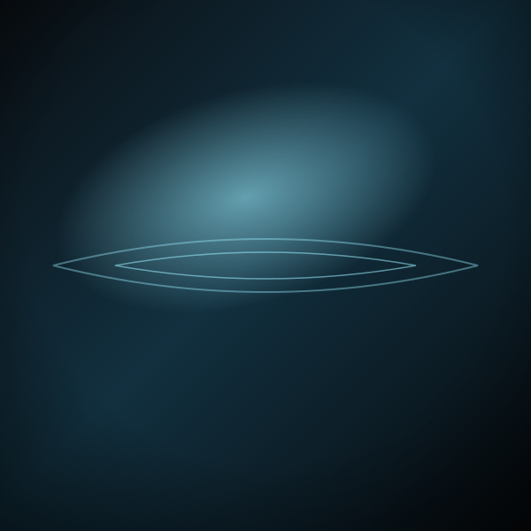
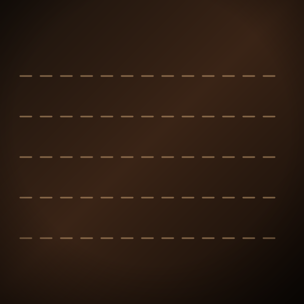
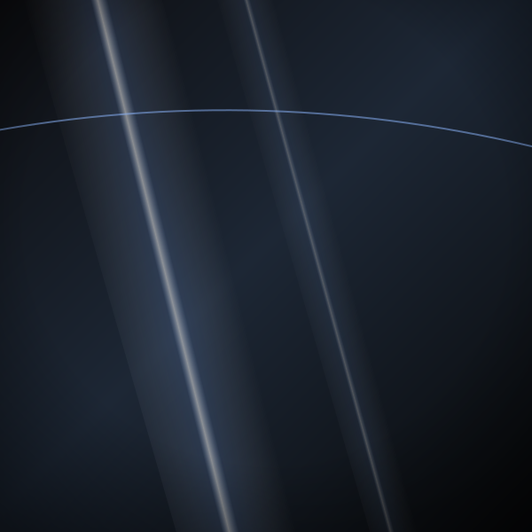
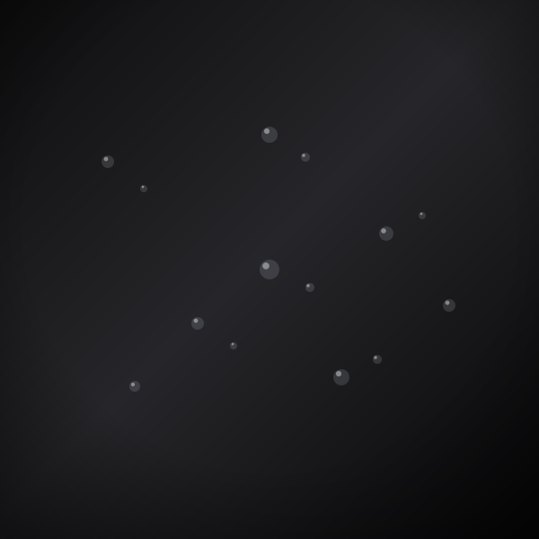

Polish
Corectăm și lustruim vopseaua pentru a scoate din nou luciul, reducem micro-zgârieturile și hologramele.
Detailing auto · Pitești
Polish care aduce luciul înapoi, protecție care ține, interior curat până la ultima cusătură și piele recondiționată ca la carte. Un concept unic în Pitești — atenție la detaliu, de la caroserie la volan.
Cine suntem
Pro Detailing Auto Pitești este locul unde mașina ta primește tratamentul complet: exterior lucios și protejat, interior curat până în cel mai mic colț, piele și plastice readuse la viață.
Lucrăm cu răbdare și produse potrivite pentru fiecare suprafață — pentru că un rezultat bun nu se grăbește. De la polish și protecție, la curățarea interiorului și recondiționarea pielii, totul se face într-un singur loc, cu grijă pentru fiecare detaliu.
„Mulțumim tuturor
pentru încrederea acordată.”
Ce facem
Alege serviciul de care are nevoie mașina ta. Pentru ofertă și programare, sună-ne — evaluăm mașina și îți spunem exact ce se poate face.
Corectăm și lustruim vopseaua pentru a scoate din nou luciul, reducem micro-zgârieturile și hologramele.
Aplicăm un strat de protecție peste vopsea, pentru un luciu care ține și o suprafață mai ușor de întreținut.
Detailing complet de interior — bord, panouri, scaune și tapițerie curățate în profunzime, ca nou.
Vopsire și recondiționare piele — scaune, volan și elemente din piele readuse la culoare și textură.
Refacerea volanului și a tapițeriei uzate — un interior care arată și se simte îngrijit.
Aplicăm folii pentru geamuri și faruri — aspect curat, protecție și un plus de stil pentru mașină.
💧 Nu ești sigur de ce ai nevoie? Sună-ne, ne uităm la mașină și îți recomandăm serviciul potrivit.
Cum lucrăm
Fără grabă, fără compromisuri — fiecare mașină trece prin același proces atent.
Ne uităm la caroserie și interior și îți spunem ce se poate îmbunătăți și cum.
Curățare și pregătirea suprafețelor, ca produsele să lucreze corect.
Polish, protecție, interior sau piele — cu produse potrivite pe fiecare suprafață.
Verificăm rezultatul împreună cu tine și îți predăm mașina lucioasă și curată.
Suprafețe & finisaje
Fiecare serviciu lasă în urmă un finisaj — de la lac oglindă la piele recondiționată. Vezi lucrări reale pe Facebook.




Imaginile ilustrează finisajele obținute prin detailing. Pentru lucrări reale, urmărește pagina de Facebook.
Sună-ne, spune-ne ce mașină ai și ce vrei să facem — restul e treaba noastră.
Contact & locație
Pitești, județul Argeș · locație nouă & modernă.
Pentru adresa exactă și indicații, sună-ne înainte de vizită.
Programează-te telefonic — îți spunem când poți veni și cât durează.